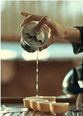
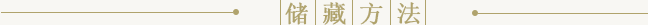
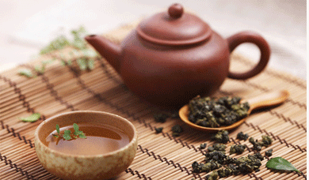
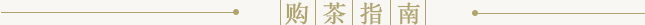

冲泡高桥银峰茶叶的用量应因人而异
饮茶之道
茶叶冲泡的水温的讲究介绍
你会泡茶吗？
泡茶有五种方法，你知道几种？
茶空间分享
来台湾，一定要去喝茶。

关于文山包种茶的冲泡方法
茶友交流区
都是爱茶的人，不如坐下来聊聊，
相互学习，聊聊人生。
沏茶应该如何掌握浸泡的时间
了解更多
了解更多
了解更多


大红袍的存放
怎样正确的储存大红袍？大红袍保质期可定为五年，对新茶陈茶都一样，从出厂日期算起，不过对商家来说，保质期越长，所担的风险越大，市面上的包装茶......
| 茶叶储存之储藏六堡茶的八要点 | 2016/03/22 |
| 关于茶叶的规格与储存方式标准的介绍 | 2016/04/16 |
| 凤凰单枞要如何保存 凤凰单枞保存方法 | 2016/04/29 |
| 来学习一下正确的武夷岩茶贮存方法吧 | 2016/05/01 |
| 如何收藏普洱茶 普洱茶的收藏技巧介绍 | 2016/05/04 |

教你一分钟识别色素差，为大家科普了4种容易直接危害身体的喝茶方式。其中，关注最多的是农残超标茶和色素茶的危害......
一般是有以下四大口号：一是清：闻其味；味道要清，不能有霉味。二是纯：辨其色；茶色如枣，不能黑如漆。三是正：存其位，存放......
桂花茶芳香怡人，深受广大消费者喜爱，桂花茶以天然为佳，那些颜色鲜艳的干花，可能是经过了人工和化学原料的处理，饮用后对身体有很大的伤害，所以要谨慎购买......